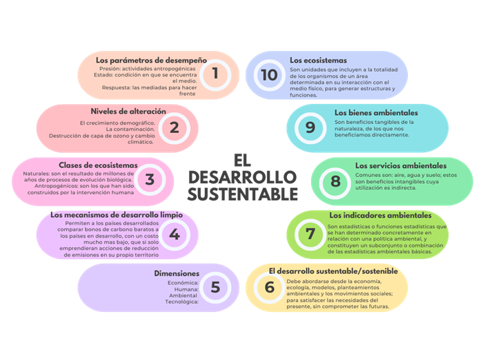

El desarrollo sustentable se refiere a la búsqueda de un equilibrio entre el crecimiento económico, la protección del medio ambiente y el bienestar social. Es un enfoque que reconoce la interdependencia entre estos tres pilares y busca promover un desarrollo que satisfaga las necesidades de las generaciones presentes sin comprometer la capacidad de las generaciones futuras para satisfacer sus propias necesidades.
Los Objetivos del Desarrollo Sustentable son un conjunto de 17 objetivos globales adoptados por las Naciones Unidas en 2015. Estos objetivos abordan una variedad de desafíos, incluyendo la erradicación de la pobreza, la igualdad de género, la acción climática y la conservación de los ecosistemas. Los ODS son una guía para lograr un desarrollo sustentable en todo el mundo.
La educación ambiental desempeña un papel fundamental en la promoción del desarrollo sustentable. Ayuda a crear conciencia sobre los problemas ambientales y capacita a las personas para tomar decisiones informadas y responsables que contribuyan a la protección del medio ambiente.
